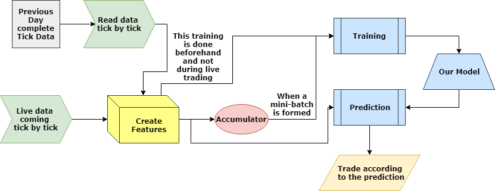

Projects
3D Human Pose Estimation
Aug 2018 - Present
Abstract : Human Pose Estimation is estimating the joint positions, more formally the pose, of a person from an image or a video. The arrival of cheap RGB-depth devices, like Microsoft Kinect, has widened the research landscape in 3D Human Pose Estimation. Both RGB and Depth data have certain limitations, but can together complement each other for an improved model. With the goal of creating a multi-modal 3D Pose estimation pipeline, we have outperformed the best reported results on Human3.6M and SURREAL. Our results indicate the vast potential in working with both RGB and Depth data together, and suggests directions to further advance the state of the art in 3D Human Pose Estimation.
[preprint not available]
Finding Influential Communities in Large Scale Networks - Survey
Aug 2018 - Dec 2018
Abstract : Community or modular structure is considered to be a significant property of large scale real-world graphs such as social or information networks. Detecting influential clusters or communities in these graphs is a problem of considerable interest as it often accounts for the functionality of the system. We aim to provide a thorough exposition of the topic, including the main elements of the problem, a brief introduction of the existing research for both disjoint and overlapping community search, the idea of influential communities, its implications and current state of the art and finally provide some insight on possible directions for future research.
[arxiv][pdf]
Deep Neural Networks in High Frequency Trading
May 2018 - Aug 2018

Abstract : The ability to give precise and fast prediction for the price movement of stocks is the key to profitability in High Frequency Trading. The main objective of this paper is to propose a novel way of modeling the high frequency trading problem using Deep Neural Networks at its heart and to argue why Deep Learning methods can have a lot of potential in the field of High Frequency Trading. The paper goes on to analyze the model's performance based on it's prediction accuracy as well as prediction speed across full-day trading simulations.
[arxiv][pdf]
Abstractive Summarization of Spoken and Written Conversations
Jan 2018 - May 2018
Abstract : Nowadays, lots of information is available in form of dialogues. We propose a novel abstractive summarization system for conversations. We use sequence tagging of utterances for identifying the discourse relations of the dialogue. After aptly capturing these relations in a paragraph, we feed it into an Attention-based pointer network to produce abstractive summaries. We obtain ROUGE-1, 2 F-scores similar to those of extractive summaries of various previous works.
[arxiv][demo][pdf]
Nucl2Vec : Local alignment of DNA sequences using Distributed Vector Representation
May 2017 - Dec 2017
 Abstract : The Next Generation Sequencing Technique (NGS) has provided an affordable and fast method for generating genetic data. Generation of whole Genome Sequence and extraction of relevant information from this data is still a computationally expensive process. In this paper we demonstrate a novel approach for pseudo local alignment of DNA reads with respect to reference genome. For this, we have used Skip-gram model for creating encodings (Nucl2Vec) and k-nearest neighbor for the final alignment. With our new approach we have reduced the computation cost for pseudo local alignment, while achieving accuracy comparable to existing defacto standard BWA-MEM tool.
Abstract : The Next Generation Sequencing Technique (NGS) has provided an affordable and fast method for generating genetic data. Generation of whole Genome Sequence and extraction of relevant information from this data is still a computationally expensive process. In this paper we demonstrate a novel approach for pseudo local alignment of DNA reads with respect to reference genome. For this, we have used Skip-gram model for creating encodings (Nucl2Vec) and k-nearest neighbor for the final alignment. With our new approach we have reduced the computation cost for pseudo local alignment, while achieving accuracy comparable to existing defacto standard BWA-MEM tool.
[biorxiv][code][pdf]
Audio Tactile Reader
Jan 2017 - May 2017
Abstract : Project done under ASSITECH Lab, Dept of Computer Science and Engineering, IIT Delhi. We created a learning assistant for visually challenged, comprising of an Android App for realtime finger gestures and movement detection and a Desktop IDE for automated data generation and mapping this data to Vector images. Live demo for visually challenged was presented in IITD OpenHouse 2017.
Demo Videos -> [android app][desktop IDE]
[blog][code]